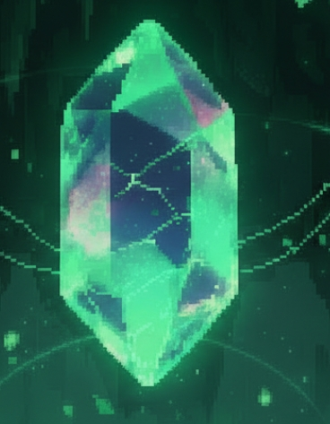

Le Cristal
des Profondeurs
— Chroniques souterraines, Chapitre I —
Dans le paisible village de …, deux amis passent leurs journées à aider les habitants et à explorer les environs. Rien ne laissait présager que cette journée serait différente des autres.
Alors qu'ils traversent la place du marché, une vieille dame les interpelle. Elle semble inquiète : un objet précieux, une ancienne relique, a disparu non loin du village. Elle leur promet une récompense s'ils acceptent d'aller la récupérer.
Les deux amis partent donc sur le chemin forestier qui mène aux ruines voisines. Après quelques épreuves, ils parviennent à mettre la main sur l'objet. Mais sur le chemin du retour, une embuscade se déclenche.
Le sol s'effondre sous leurs pieds.
Ils chutent dans l'obscurité… et se réveillent dans un immense complexe souterrain composé de donjons reliés entre eux. En explorant ces lieux, ils découvrent un étrange cristal vert, incrusté dans la roche et pulsant d'une lueur surnaturelle.
Poussés par la curiosité — et par la nécessité de survivre — ils en consomment un fragment. Très vite, ils sentent leur corps changer. Force, vitesse, pouvoirs étranges… le cristal leur offre des capacités qu'aucun humain ne devrait posséder.
Mais ce pouvoir a un prix. Plus ils avancent, plus ils ressentent le besoin d'en consommer à nouveau. Une sensation de manque s'installe. Le cristal n'est plus seulement un outil : il devient une obsession.
Pour retrouver la surface — et comprendre le lien entre la relique, la vieille dame,
et ce monde souterrain — ils devront continuer à plonger toujours plus profondément.
Ensemble.